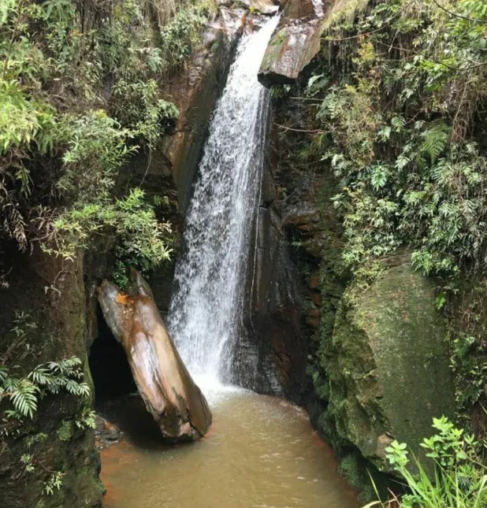
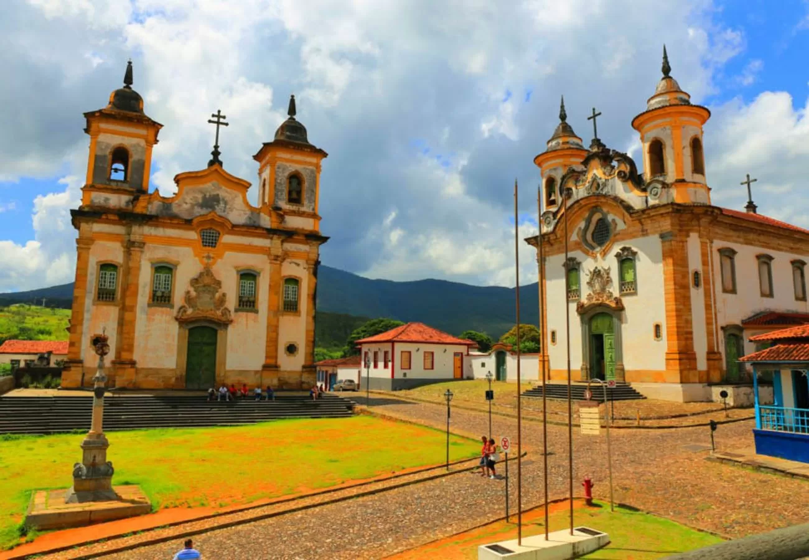

Lucas Guia Você
Guia em Ouro Preto & Região
Especialista em arte barroca, história do ciclo do ouro, trilhas da serra e roteiros privativos personalizados.
Trilhas da Serra
Arte Barroca
Centro Histórico
Mirantes Exclusivos
Natureza
Trilhas da Serra
Arte Barroca
Centro Histórico
Mirantes Exclusivos
Natureza
Monte seu Passeio
1 Escolha seu roteiro

Tiradentes & São João Del Rei

Parque das Andorinhas

Mariana

Ouro Preto

Congonhas do Campo

Passeio em Grupo
2 Data do passeio
3 Seus dados
Selecione um roteiro para continuar